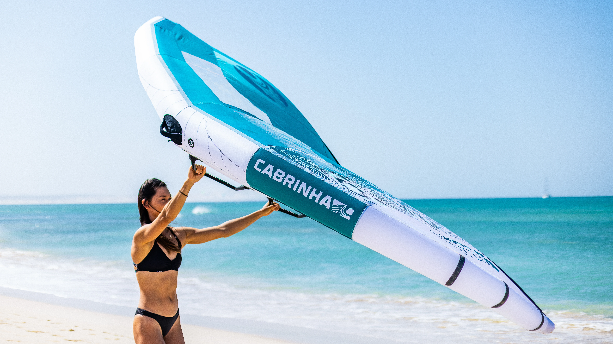

윙포일을 처음 시작하는 첫 한두 시즌. 관건은 안전한 학습 환경과 너무 어렵지 않은 장비입니다. 전문 퍼포먼스 어드바이저가 현장에서 검증한 forgiving set-up으로 학습 곡선을 절반으로.
현장에서 1:1 컨설팅 수백 건을 통해 수집한 가장 흔한 stuck point
대부분 wing size·foil lift 부족, 입문·초급 라이더에게 4.5m² 이하 wing은 lift 부족, 작은 high-AR 포일은 take-off 늦음, 큰 wing + Takoon Starter 같은 큰 lift 포일이 답
보드 volume이 부족하면 무릎을 짚는 순간부터 휘청이고, 발 위치·무게 중심을 잡기도 전에 옆으로 빠짐, 본인 체중 + 30L 이상 보드와 정확한 풋포지션이 균형의 출발점
Wing 무게 + 손목 피로 + 잘못된 grip, 가벼운 wing + boom 또는 carbon handle + 적절한 wetsuit으로 체력 손실을 줄임
스팟마다 바람·파도 character가 달라 일반 영상이 안 맞음, 스팟별 셋업이 따로 있음
윙포일은 sailing·windsurfing·surfing 세 가지를 동시에 해야 하는 sport입니다. 입문·초급 라이더가 어려움을 겪는 흔한 원인은 장비가 본인 체중·레벨·컨디션에 맞지 않기 때문입니다.
단무지 전문 퍼포먼스 어드바이저가 현장 코칭 경험에서 수집한, 입문·초급 라이더가 가장 자주 막히는 네 가지 원인을 정리했습니다.
한 셋업으로 모든 걸 한 번에 익히려고 하면 결국 어느 단계에서도 자신감이 안 붙습니다. 단무지 전문 퍼포먼스 어드바이저는 입문 세션을 세 단계로 나눠 안내합니다.
작은 윙으로 해변·잔디 위에서 윙 조작에 익숙해지는 단계. 손 위치·바람 받는 각도·트랜지션 흐름을 안전한 환경에서 학습합니다.
작은 윙 + SUP 보드 또는 충분히 넓은 윙포일 보드(스타터·X-Glide V2 등) 위에서 조작만 익힙니다. 이 단계의 목표는 테이크오프가 아닙니다. 물 위에서 윙·자세·trim·바람 각도를 컨트롤하는 감각을 만드는 것
라이더 체중·바람·컨디션에 맞는 적정 보드/포일/윙으로 진입. 핵심은 마스트를 평소 셋업보다 테일 쪽으로 옮겨 시작하는 것. 글라이딩 속도가 충분하지 않은 상태에서 리프트가 강하면 보드가 솟구쳐 다이브합니다. 의도적으로 리프트를 약화시켜 글라이딩 감각을 먼저 익힌 뒤, 자신감이 생기면 마스트를 점진적으로 앞으로 이동시켜 테이크오프를 연습합니다.
이 단계 구분은 일반 리테일에서는 잘 알려주지 않습니다. 단무지의 컨설팅 차별점은 장비를 파는 것이 아니라 라이더의 학습 path를 설계해 드린다는 것입니다.
체중 4단계 × 스타일 4단계 = 16개 조합. 본인에게 맞는 셋업을 찾아보세요
입문 시즌이 끝나면 자연스럽게 중급으로 넘어갑니다. 그 시점에 장비를 어떻게 upgrade할지 미리 알아두세요.
Takoon Starter → X-Glide V2 (smaller, more responsive). 여전히 forgiving하지만 turn radius가 짧아져 다음 단계 진입 가능
입문 wing보다 0.5m² 작은 사이즈로. control이 더 정확해지고 upwind 능력 ↑
80cm → 84cm — 기울기 각도 깊게 가져갈 수 있고 ocean swell 대응 가능
95L → 83L. 입문·초급 buffer 제거. 더 sporty한 라이딩
입문·초급 라이더는 한 사이즈 큰 것이 답. lift가 충분해야 학습이 빠릅니다. 70kg 라이더는 5.5m²부터 시작 권장. 컨트롤이 익숙해지면 5.0m²로 size down.
입문·초급 라이더는 짧은 마스트(75-80cm)부터 시작하세요. 세 가지 이유가 있습니다. 충격 최소화 — 전복 시 보드와 포일 사이의 체공·낙하 거리가 짧아 안전합니다. 포일 감지 — 보드와 포일 사이가 짧을수록 lift·glide의 미세한 신호가 발 아래로 즉시 전달됩니다. 레버리지 최소화 — 짧은 마스트는 보드 미동에도 시스템이 적게 흔들려 안정적입니다. 50시간 이상 라이딩으로 자신감이 붙으면 84cm으로 upgrade — 빨라진 속도가 만드는 피칭 모멘텀에 대응할 수 있습니다.
라이딩 전 기간 항상 착용해야 합니다. 입문 시즌은 foil이 발·갈비를 칠 위험이 가장 높아 특히 더 철저히 챙기시고, 숙련자가 되면 속도가 빨라져 충돌 시 위험이 더 커지므로 더 좋은 등급으로 업그레이드 하셔야 합니다. 입문 → WIP Pro Helmet + Wing Impact Vest 50N, 상급·선수 → WIP X-OVER race-grade Helmet + Kompact 50N 2.0 (slim 라이프자켓).
학습 spot — 모래 바닥, 안정적인 바람, 강습 인프라 풍부. 강풍 spot은 입문에 부적합. 일부 spot은 컨디션은 좋으나 강사·렌탈 인프라가 약함. 1:1 컨설팅으로 본인 위치·일정 기준 추천 spot을 안내드립니다.
입문 풀세트(보드 + 윙 + 포일 세트 + 안전장비) 약 450만~470만원. 기준: Takoon Cruise 110L + Takoon Wing V4 4.0~5.0m + Foil Starter Set 1600cm² + WIP Wing Impact Vest 50N + WIP WIFLEX Helmet. 본인 체중·spot 에 맞춰 1:1 컨설팅으로 정확한 견적과 조합을 안내드립니다.
표준 매트릭스에 demographic 보정이 적용된 별도 가이드
올림픽 3회 연속 단독 출전 · 3개국 윈드서핑 국가대표팀 코치 옥덕필 박사 + 국가대표 포뮬러 카이트 조수철 선수가 함께 운영하는 단무지공방의 1:1 컨설팅. 체중·spot·전문 분야 정확히 듣고 네 브랜드 큐레이션해 드립니다.